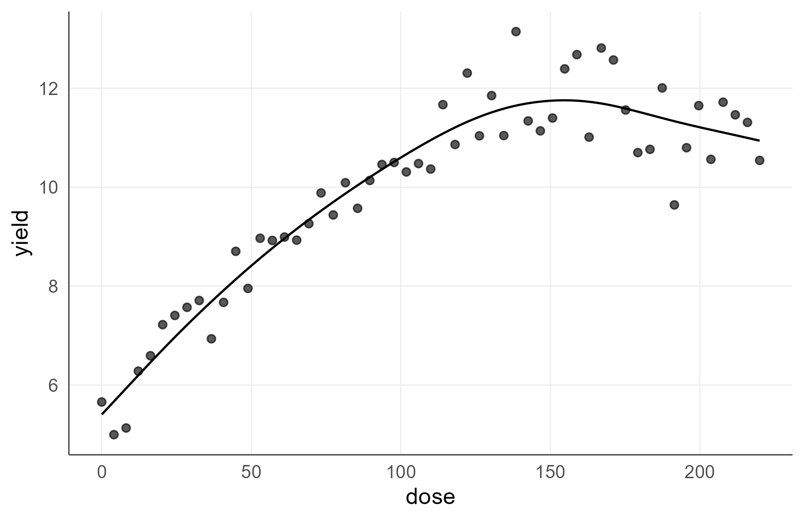
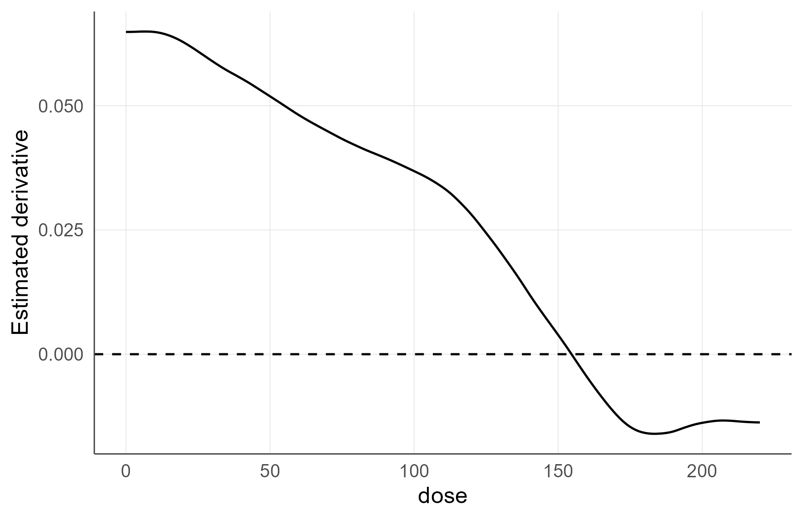
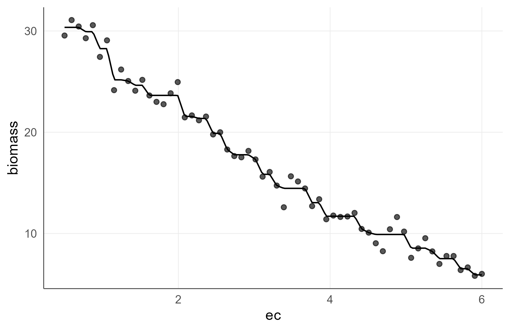
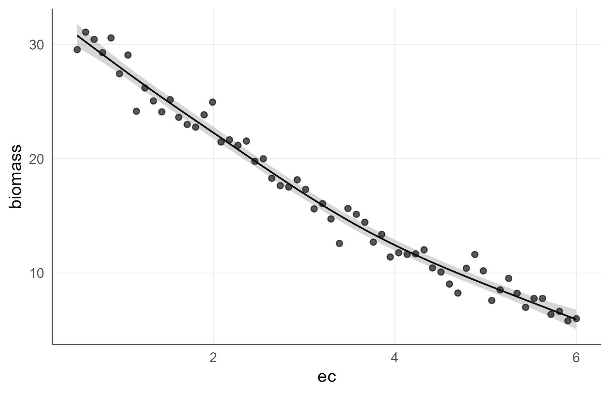
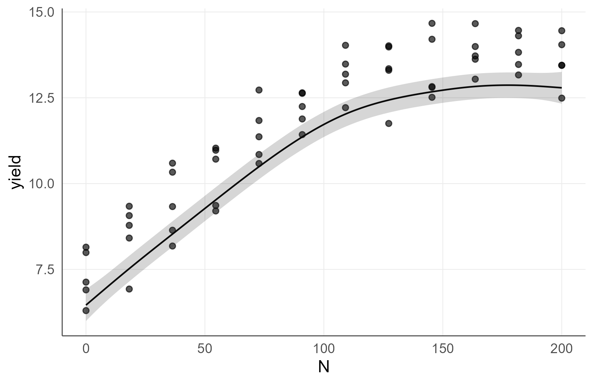
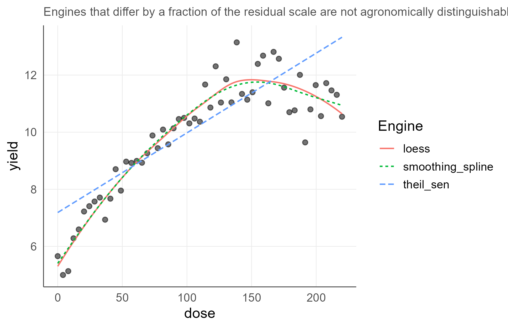
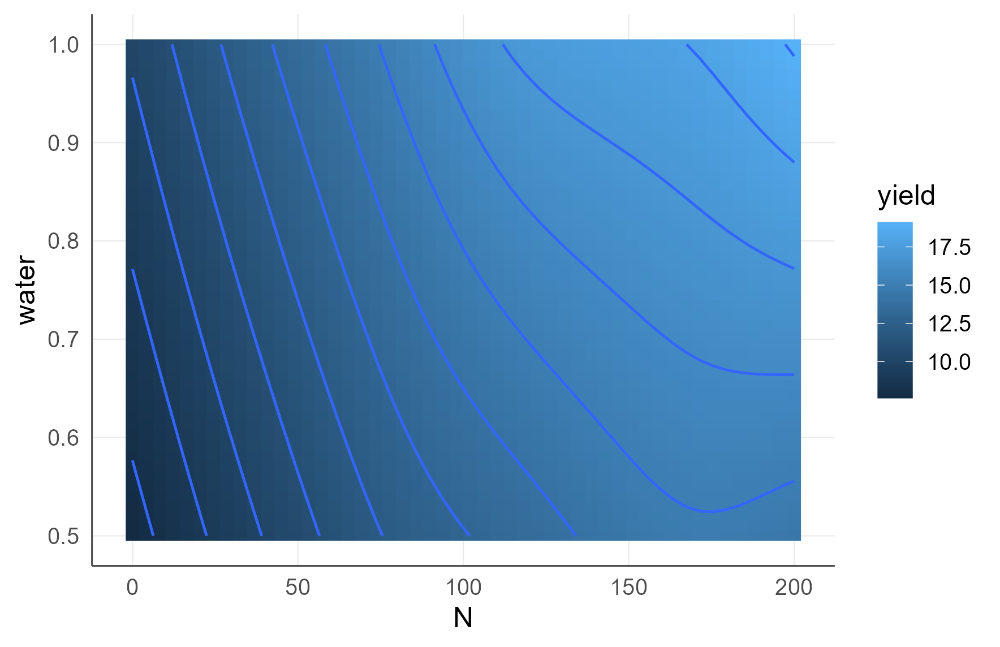
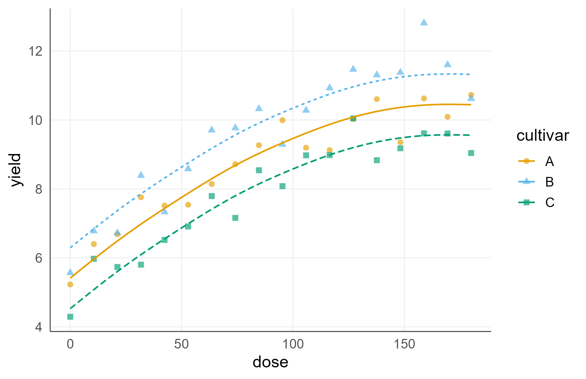
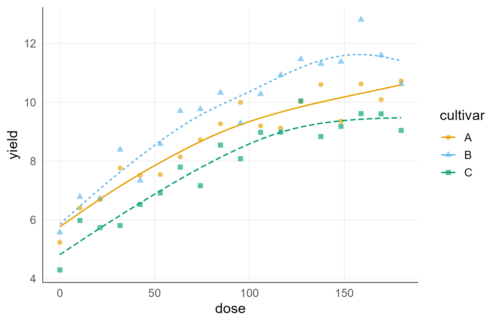

Nonparametric and Shape-Aware Regression for Agronomic Gradients
agriRank Development Team
Source:vignettes/v06-nonparametric-regression.Rmd
v06-nonparametric-regression.RmdRegression vignette Package:
agriRank Version targeted:
0.14.0 Owns: fitting a curve to a
quantitative agronomic gradient without assuming its functional
form.
1. Why this vignette exists
A fertilizer rate, a salinity level, an irrigation depth and a sowing density are not categories. They lie on a scale, and the scientific content of the experiment is the shape of the response along that scale.
The habitual analysis, comparing four or five rates as unrelated categories, answers a question nobody asked and reports letters where a curve belongs. The habitual alternative, fitting a quadratic because it is available, imposes a shape the biology did not promise: a quadratic is symmetric about its peak and falls away as fast as it rose, which almost no crop response does.
This vignette fits curves without imposing a functional form, and where a shape is known from the biology, it imposes that shape rather than a convenient polynomial.
Let the data choose the shape, unless the biology already fixed it. Never let a p-value choose the engine.
1.1 Where this sits
| Stage | Vignette |
|---|---|
| declaring the design the curve is fitted inside | Design Foundations |
| the factorial alternative to a curve | Effects, Conover, Contrasts, and Factorial Inference |
| whole-number treatments | Integer-Support Nonparametric Regression |
| where the response stops changing, and intervals for a plot | Distribution-Free Uncertainty and Model Checking |
| a rate to recommend, with an interval on its location | Optima, Quantiles, and How the Block Enters the Model |
This vignette produces the curve. Those two turn it into a recommendation.
2. Learning objectives
After working through this vignette, the reader should be able to:
- decide whether a quantitative treatment should be analysed as a factor, as a gradient, or as both;
- name the fifteen engines available and say which family each belongs to;
- choose an engine from the structure of the data and the biology, not from the fit;
- impose a shape constraint when the biology fixes the shape, and explain what the constraint buys;
- retain a declared block in a regression, and recognise the engines that cannot;
- read the three explained-variation indices and say what each one answers;
- compare engines predictively without letting the comparison feed back into inference;
- produce a resampling band for an engine with no analytic interval;
- fit and read a response surface over two gradients;
- fit one curve per level of a qualitative factor;
- test whether a prespecified parametric equation is too restrictive, without adopting it;
- handle missing values explicitly rather than by silent deletion.
3. The regression module in one map
3.1 The engines, by family
data.frame(
engine = c("loess", "smoothing_spline", "kernel", "isotonic", "cobs",
"discrete_kernel", "unimodal_isotonic",
"umbrella", "integer_grid",
"theil_sen", "siegel", "quantile", "smooth_quantile",
"gam", "scam"),
family = c(rep("strictly nonparametric", 7),
rep("constrained / projected", 2),
rep("rank-robust or semiparametric", 6))[1:15],
shape_imposed = c("none", "none", "none", "monotone", "as declared",
"none", "one peak", "one peak", "none",
"none", "none", "none", "none", "none", "as declared")
)
#> engine family shape_imposed
#> 1 loess strictly nonparametric none
#> 2 smoothing_spline strictly nonparametric none
#> 3 kernel strictly nonparametric none
#> 4 isotonic strictly nonparametric monotone
#> 5 cobs strictly nonparametric as declared
#> 6 discrete_kernel strictly nonparametric none
#> 7 unimodal_isotonic strictly nonparametric one peak
#> 8 umbrella constrained / projected one peak
#> 9 integer_grid constrained / projected none
#> 10 theil_sen rank-robust or semiparametric none
#> 11 siegel rank-robust or semiparametric none
#> 12 quantile rank-robust or semiparametric none
#> 13 smooth_quantile rank-robust or semiparametric none
#> 14 gam rank-robust or semiparametric none
#> 15 scam rank-robust or semiparametric as declared3.2 The functions
| Function | Answers |
|---|---|
agri_np_regression() |
fit a curve |
agri_np_predict() |
predict, with an analytic interval where one is defined |
agri_np_plot() |
the standard figures |
agri_np_derivative() |
the slope of the fitted curve |
agri_np_optimum() |
the fitted extreme, as a bare point |
agri_np_bootstrap() |
a resampling band for the curve |
agri_np_compare() |
predictive comparison of engines |
agri_np_diagnostics() |
explained variation and predictive error |
agri_np_curves() |
several engines overlaid on the data |
agri_np_significance() |
bootstrap tests for kernel fits |
agri_np_specification() |
is a prespecified equation too restrictive |
4. The decision is about the treatment, not the fit
Nitrogen applied at 0, 40, 80, 120 and 160 kg/ha can be analysed two ways.
| As a factor | As a gradient |
|---|---|
| assumes nothing about the shape between levels | assumes the response varies smoothly between them |
| answers: do these five levels differ | answers: what shape, and where is it changing |
| cannot interpolate | can interpolate, inside the tested range |
| spends 4 degrees of freedom | spends fewer, and gains precision if the shape is real |
| output: letters | output: a curve |
Decide on scientific grounds. If the levels were chosen as points on a continuum and interpolation between them is meaningful, the gradient analysis answers the real question. If they are distinct managements that happen to carry numeric labels, they are a factor.
5. A first fit
set.seed(2001)
dose_data <- data.frame(dose = seq(0, 220, length.out = 55))
dose_data$yield <- 5.2 + 0.075 * dose_data$dose -
0.00022 * dose_data$dose^2 + rnorm(nrow(dose_data), 0, 0.65)
fit_ss <- agri_np_regression(
yield ~ dose,
data = dose_data,
method = "smoothing_spline"
)
fit_ss
#> agriRank nonparametric regression
#> Method: smoothing_spline
#> Response: yield
#> Predictors: dose5.1 The standard interrogation
agri_np_predict(fit_ss, data.frame(dose = c(50, 100, 150, 200)))
#> [1] 8.410741 10.597941 11.747697 11.210962
agri_np_diagnostics(fit_ss)
#> $method
#> [1] "smoothing_spline"
#>
#> $metrics
#> n RMSE MAE MedAE bias Spearman
#> 1 55 0.5869064 0.4823941 0.404772 -4.420222e-12 0.9120491
#>
#> $r2
#> pseudo_r2 cv_r2 spearman_r2 effective_df n
#> 1 0.9145779 NA 0.8318335 4.896585 55
#>
#> $residual_median
#> [1] -0.01555434
#>
#> $residual_MAD
#> [1] 0.6231758
#>
#> $residual_fitted_spearman
#> [1] 0.03506494
#>
#> $n_missing_response
#> [1] 0
#>
#> $n_original
#> [1] 55
#>
#> $n_omitted
#> [1] 0
#>
#> $na_action
#> [1] "fail"
#>
#> $details
#> $details$df
#> [1] 4.896585
#>
#> $details$spar
#> [1] 0.8110458
head(agri_np_derivative(fit_ss))
#> predictor x derivative
#> 1 dose 0.000000 0.06485649
#> 2 dose 1.105528 0.06486016
#> 3 dose 2.211055 0.06487125
#> 4 dose 3.316583 0.06488977
#> 5 dose 4.422111 0.06491461
#> 6 dose 5.527638 0.06493196
agri_np_optimum(fit_ss)
#> predictor optimum fitted_response objective at_boundary support
#> 1 dose 154.7495 11.7568 max FALSE continuous5.2 The figures
agri_np_plot(fit_ss, type = "fit")
Fitted curve over the observed points. The observed data are shown because a curve without them cannot be judged.
agri_np_plot(fit_ss, type = "derivative")
The slope of the fitted curve. Where it crosses zero is where the fitted response turns over.
5.3 What a smoothing spline assumes
It assumes the response is smooth, and it chooses how smooth by cross-validation. It does not assume a functional form, monotonicity, or a single peak.
That freedom has a cost: with few distinct predictor values, or with noise comparable to the signal, the fitted curve can follow features that are not there. Section 9 gives the diagnostic that reveals it.
6. Shape constraints, when the biology fixes the shape
6.1 The situation
Some agronomic responses have a known direction. Biomass does not rise with salinity. Germination does not fall with temperature over the sub-optimal range. Where that knowledge exists, imposing it is not an assumption added to the data: it is information the data did not have to spend degrees of freedom rediscovering.
set.seed(2002)
sal <- data.frame(ec = seq(0.5, 6.0, length.out = 60))
sal$biomass <- 31 * exp(-0.12 * sal$ec^1.45) + rnorm(nrow(sal), 0, 1.1)
fit_iso <- agri_np_regression(
biomass ~ ec,
data = sal,
method = "isotonic",
shape = "decreasing"
)
fit_iso
#> agriRank nonparametric regression
#> Method: isotonic
#> Response: biomass
#> Predictors: ec
#> Shape constraint: decreasing
agri_np_plot(fit_iso)
Isotonic regression with a declared decreasing constraint. The fit is a step function, which is what the method estimates.
6.2 Isotonic regression fits steps, and that is honest
The fitted object is a step function, not a smooth curve. That is not a limitation to be hidden: isotonic regression estimates the best monotone function, and the best monotone fit to finite noisy data is a step function. Drawing a smooth line through it would suggest a precision the estimate does not have.
6.3 A smooth constrained alternative
if (requireNamespace("scam", quietly = TRUE)) {
fit_scam <- agri_np_regression(
biomass ~ ec,
data = sal,
method = "scam",
shape = "decreasing"
)
print(agri_np_plot(fit_scam, interval = TRUE))
}
SCAM imposes the same monotone constraint but through a penalized spline basis, so the result is smooth and carries an analytic interval. Where a smooth constrained curve is wanted for presentation, this is the route.
6.4 The available constraints
data.frame(
shape = c("increasing", "decreasing", "convex", "concave",
"increasing_convex", "increasing_concave",
"decreasing_convex", "decreasing_concave"),
agronomic_example = c(
"germination over sub-optimal temperature",
"biomass over salinity",
"cost over input rate",
"yield over a nutrient below the optimum",
"accelerating growth phase",
"diminishing returns to fertilizer",
"decelerating decline",
"accelerating decline under stress")
)
#> shape agronomic_example
#> 1 increasing germination over sub-optimal temperature
#> 2 decreasing biomass over salinity
#> 3 convex cost over input rate
#> 4 concave yield over a nutrient below the optimum
#> 5 increasing_convex accelerating growth phase
#> 6 increasing_concave diminishing returns to fertilizer
#> 7 decreasing_convex decelerating decline
#> 8 decreasing_concave accelerating decline under stress6.5 The constraint must come from biology, not from the plot
# Isotonic regression requires an explicit direction. It will not infer one.
agri_np_regression(biomass ~ ec, sal, method = "isotonic")
#> Error:
#> ! Isotonic regression requires an explicit scientific direction: `shape = 'increasing'` or `shape = 'decreasing'`.Choosing the constraint after looking at the scatter is fitting the data twice: once to pick the shape and once to estimate it. The stated uncertainty then does not cover the first step.
7. A block in a regression
set.seed(2003)
rcbd <- expand.grid(
block = factor(1:5),
N = seq(0, 200, length.out = 12)
)
rcbd$yield <- 6 + 0.075 * rcbd$N - 0.00021 * rcbd$N^2 +
as.numeric(rcbd$block) * 0.35 + rnorm(nrow(rcbd), 0, 0.55)
if (requireNamespace("mgcv", quietly = TRUE)) {
fit_gam <- agri_np_regression(
yield ~ N,
data = rcbd,
method = "gam",
block = block
)
print(summary(fit_gam))
}
#> agriRank nonparametric regression summary
#> Method: gam
#>
#> n RMSE MAE MedAE bias Spearman
#> 60 0.4620908 0.3867066 0.3589656 -2.398075e-15 0.9569325
#>
#> Backend summary:
#>
#> Family: gaussian
#> Link function: identity
#>
#> Formula:
#> yield ~ s(N, k = 10) + block
#>
#> Parametric coefficients:
#> Estimate Std. Error t value Pr(>|t|)
#> (Intercept) 10.7924 0.1450 74.406 < 2e-16 ***
#> block2 0.4741 0.2051 2.311 0.0249 *
#> block3 1.1968 0.2051 5.835 3.78e-07 ***
#> block4 1.2390 0.2051 6.040 1.80e-07 ***
#> block5 1.5419 0.2051 7.517 8.58e-10 ***
#> ---
#> Signif. codes: 0 '***' 0.001 '**' 0.01 '*' 0.05 '.' 0.1 ' ' 1
#>
#> Approximate significance of smooth terms:
#> edf Ref.df F p-value
#> s(N) 4.253 5.234 215.5 <2e-16 ***
#> ---
#> Signif. codes: 0 '***' 0.001 '**' 0.01 '*' 0.05 '.' 0.1 ' ' 1
#>
#> R-sq.(adj) = 0.953 Deviance explained = 96%
#> -REML = 51.585 Scale est. = 0.25246 n = 60
if (exists("fit_gam")) print(agri_np_plot(fit_gam, predictor = "N", interval = TRUE))
Block-adjusted fitted response with its analytic interval. The band covers the curve, not a plot.
7.1 Engines that cannot carry a block are refused
agri_np_regression(yield ~ N, rcbd, method = "loess", block = block)
#> Error:
#> ! Method `loess` does not adjust for the declared block in agriRank. Use kernel, quantile, GAM or SCAM, or omit block only when scientifically justified.The refusal is the same principle as in the design vignette. LOESS fits a curve in one predictor and has no mechanism for an adjustment factor. Applying it to blocked data would leave the between-block variation in the residual, which is what blocking removed.
7.2 Which engines keep a block
data.frame(
keeps_block = c("gam", "scam", "kernel", "quantile", "smooth_quantile",
"umbrella", "integer_grid"),
refuses_block = c("loess", "smoothing_spline", "theil_sen", "siegel",
"cobs", "isotonic", "unimodal_isotonic")
)
#> keeps_block refuses_block
#> 1 gam loess
#> 2 scam smoothing_spline
#> 3 kernel theil_sen
#> 4 quantile siegel
#> 5 smooth_quantile cobs
#> 6 umbrella isotonic
#> 7 integer_grid unimodal_isotonic8. Quantile regression, and the other engines
8.1 Conditional quantiles
if (requireNamespace("quantreg", quietly = TRUE)) {
fit_q50 <- agri_np_regression(yield ~ N, rcbd, method = "quantile",
tau = 0.50, block = block)
fit_q10 <- agri_np_regression(yield ~ N, rcbd, method = "quantile",
tau = 0.10, block = block)
nd <- rcbd[1:5, ]
print(data.frame(N = nd$N,
q50 = round(as.numeric(agri_np_predict(fit_q50, nd)), 2),
q10 = round(as.numeric(agri_np_predict(fit_q10, nd)), 2)))
}
#> Warning in rq.fit.br(x, y, tau = tau, ...): Solution may be nonunique
#> N q50 q10
#> 1 0 7.53 6.37
#> 2 0 7.80 7.33
#> 3 0 8.29 8.22
#> 4 0 9.13 7.60
#> 5 0 9.22 8.15The median describes the typical plot; the tenth percentile describes the plot a grower meets in a bad year. A treatment that raises one without the other changes the risk, not only the level, and the two are different recommendations. The smooth version and the full fan of quantiles belong to Optima, Quantiles, and How the Block Enters the Model.
8.2 Kernel regression with mixed predictor types
if (requireNamespace("np", quietly = TRUE)) {
set.seed(2004)
kd <- expand.grid(
cultivar = factor(c("A", "B")),
dose = seq(0, 180, length.out = 20)
)
kd$yield <- 5 + 0.06 * kd$dose - 0.00018 * kd$dose^2 +
ifelse(kd$cultivar == "B", 1.2, 0) + rnorm(nrow(kd), 0, .45)
fit_kernel <- agri_np_regression(yield ~ dose + cultivar, kd,
method = "kernel")
print(agri_np_diagnostics(fit_kernel))
}
#> $method
#> [1] "kernel"
#>
#> $metrics
#> n RMSE MAE MedAE bias Spearman
#> 1 40 0.3726883 0.2957533 0.2061477 0.07310834 0.9681051
#>
#> $r2
#> pseudo_r2 cv_r2 spearman_r2 effective_df n
#> 1 0.9540871 NA 0.9372274 NA 40
#>
#> $residual_median
#> [1] 0.05120071
#>
#> $residual_MAD
#> [1] 0.3416752
#>
#> $residual_fitted_spearman
#> [1] 0.03939962
#>
#> $n_missing_response
#> [1] 0
#>
#> $n_original
#> [1] 40
#>
#> $n_omitted
#> [1] 0
#>
#> $na_action
#> [1] "fail"
#>
#> $details
#> $details$bandwidth
#>
#> Regression Data (40 observations, 2 variable(s)):
#>
#> dose cultivar
#> Bandwidth(s): 24.47498 0.03045118
#>
#> Regression Type: Local-Linear
#> Bandwidth Selection Method: Expected Kullback-Leibler Cross-Validation
#> Formula: yield ~ dose + cultivar
#> Bandwidth Type: Fixed
#> Objective Function Value: -0.3224155 (achieved on multistart 1)
#> Number of Function Evaluations: 316
#> Evaluation cache (Powell): 121 hits / 293 lookups (41.3%)
#>
#> Continuous Kernel Type: Second-Order Gaussian
#> No. Continuous Explanatory Vars.: 1
#>
#> Unordered Categorical Kernel Type: Aitchison and Aitken
#> No. Unordered Categorical Explanatory Vars.: 1Kernel regression handles continuous and categorical predictors in one fit, with bandwidths chosen by cross-validation. It is the most flexible engine here and the most data-hungry.
8.3 Rank-robust slopes
Theil-Sen and Siegel regression estimate a slope as a median of pairwise slopes. They are the natural choice when the relationship is close to linear and a few extreme plots would dominate an ordinary fit. They also return interpretable coefficients, which the smoothers deliberately do not.
ts_fit <- agri_np_regression(yield ~ dose, dose_data, method = "theil_sen")
coef(ts_fit)
#> (Intercept) dose
#> 7.18408725 0.02792083
confint(ts_fit)
#> term estimate lower upper method
#> 1 (Intercept) 7.18408725 6.57301994 7.25400571 backend
#> 2 dose 0.02792083 0.02602338 0.02894238 backend8.4 Why the smoothers refuse coefficients
coef(fit_ss)
#> Error:
#> ! Method `smoothing_spline` does not define interpretable regression coefficients. It estimates a curve, not a finite parameter vector. Use agri_np_predict(), agri_np_derivative() or agri_np_optimum() to describe the fitted response, and coef() only with theil_sen, siegel, quantile.A smoothing spline has coefficients, but they are basis weights with no agronomic meaning. Reporting one as “the effect of nitrogen” would invite a reading the model does not support, so the package refuses by name.
9. Explained variation, and what each index answers
agri_np_diagnostics(fit_ss, cv = TRUE, seed = 1)$r2
#> pseudo_r2 cv_r2 spearman_r2 effective_df n
#> 1 0.9145779 0.8823811 0.8318335 4.896585 55| Index | Question | Fails to notice |
|---|---|---|
pseudo_r2 |
how much variation does the fitted curve reproduce | overfitting: it always rises with flexibility |
cv_r2 |
how much would it reproduce on a plot it has not seen | nothing, but it is noisy in small experiments |
spearman_r2 |
how much of the ordering does it get right | the size of the departures |
effective_df |
how much flexibility was actually used | nothing; read it beside the other three |
9.1 The pattern that reveals overfitting
A flexible engine typically shows a larger
pseudo_r2, a larger
effective_df and a smaller
cv_r2 than a rigid one on the same data.
cmp <- do.call(rbind, lapply(c("smoothing_spline", "loess", "theil_sen"),
function(m) {
f <- agri_np_regression(yield ~ dose, dose_data, method = m)
r <- agri_np_diagnostics(f, cv = TRUE, seed = 1)$r2
data.frame(engine = m, pseudo_r2 = round(r$pseudo_r2, 3),
cv_r2 = round(r$cv_r2, 3), edf = round(r$effective_df, 2))
}))
cmp
#> engine pseudo_r2 cv_r2 edf
#> 1 smoothing_spline 0.915 0.882 4.9
#> 2 loess 0.913 0.863 4.4
#> 3 theil_sen 0.666 0.596 2.0Read the gap between pseudo_r2 and cv_r2. A
large gap is the signature of a curve following noise, and it is visible
only because the two are reported together.
9.2 Why a single R-squared beside a flexible fit is uninformative
A sufficiently flexible smoother can reproduce any data set exactly,
giving pseudo_r2 = 1 and no predictive ability at all.
Reporting that number alone tells the reader nothing about the response
and everything about the flexibility that was permitted.
10. Predictive comparison of engines
agri_np_compare(
yield ~ dose,
dose_data,
methods = c("smoothing_spline", "loess"),
kfold = 5,
metric = "RMSE"
)
#> method n RMSE MAE MedAE bias Spearman
#> 1 loess 52 0.6831081 0.5557807 0.4636558 0.002671196 0.8263468
#> 2 smoothing_spline 55 0.6886877 0.5576028 0.4776560 -0.022243076 0.8373016
#> selected_metric failures
#> 1 0.6831081 0
#> 2 0.6886877 0
if (requireNamespace("mgcv", quietly = TRUE)) {
print(agri_np_compare(yield ~ N, rcbd, methods = c("gam", "kernel"),
block = block, kfold = 4))
}
#> method n RMSE MAE MedAE bias Spearman
#> 1 gam 60 0.5458867 0.4568858 0.4689659 -0.005611808 0.9398166
#> 2 kernel 60 0.6414834 0.5123385 0.4662844 0.118146281 0.9125313
#> selected_metric failures
#> 1 0.5458867 0
#> 2 0.6414834 010.1 What this table is for, and what it is not
It reports cross-validated predictive error. It says which engine predicts a held-out plot best.
It does not say which engine gives the correct
p-value, and choosing the engine that produced the most convenient
p-value is the single most common way to invalidate a nonparametric
analysis. The package separates the two operations deliberately: nothing
in agri_np_compare() feeds back into inference.
10.2 The failures column
An engine that cannot carry the declared block is recorded as a failure rather than dropped from the table, so the comparison cannot mislead by omission.
10.3 Several engines on one figure
agri_np_curves(yield ~ dose, dose_data,
methods = c("smoothing_spline", "loess", "theil_sen"))
Three engines over the same data. Where they agree, the shape is not an artefact of the smoother.
Overlaying engines is a useful sanity check. A feature that appears under one smoother and not the others is a property of that smoother.
11. Resampling bands
if (requireNamespace("mgcv", quietly = TRUE)) {
bb <- agri_np_bootstrap(fit_gam, B = 99, n = 80, seed = 2005)
print(head(as.data.frame(bb)))
}
#> Warning: B < 999 is a speed device for examples and vignettes; final inference
#> needs B >= 999. Silence this note with options(agriRank.quiet_small_B = TRUE).
#> Warning in predict.gam(eng, newdata = newdata, type = "response"): factor
#> levels 1 not in original fit
#> Warning in predict.gam(eng, newdata = newdata, type = "response"): factor
#> levels 1 not in original fit
#> Warning in predict.gam(eng, newdata = newdata, type = "response"): factor
#> levels 1 not in original fit
#> Warning in predict.gam(eng, newdata = newdata, type = "response"): factor
#> levels 1 not in original fit
#> Warning in predict.gam(eng, newdata = newdata, type = "response"): factor
#> levels 1 not in original fit
#> Warning in predict.gam(eng, newdata = newdata, type = "response"): factor
#> levels 1 not in original fit
#> Warning in predict.gam(eng, newdata = newdata, type = "response"): factor
#> levels 1 not in original fit
#> Warning in predict.gam(eng, newdata = newdata, type = "response"): factor
#> levels 1 not in original fit
#> Warning in predict.gam(eng, newdata = newdata, type = "response"): factor
#> levels 1 not in original fit
#> Warning in predict.gam(eng, newdata = newdata, type = "response"): factor
#> levels 1 not in original fit
#> Warning in predict.gam(eng, newdata = newdata, type = "response"): factor
#> levels 1 not in original fit
#> Warning in predict.gam(eng, newdata = newdata, type = "response"): factor
#> levels 1 not in original fit
#> Warning in predict.gam(eng, newdata = newdata, type = "response"): factor
#> levels 1 not in original fit
#> Warning in predict.gam(eng, newdata = newdata, type = "response"): factor
#> levels 1 not in original fit
#> Warning in predict.gam(eng, newdata = newdata, type = "response"): factor
#> levels 1 not in original fit
#> Warning in predict.gam(eng, newdata = newdata, type = "response"): factor
#> levels 1 not in original fit
#> Warning in predict.gam(eng, newdata = newdata, type = "response"): factor
#> levels 1 not in original fit
#> Warning in predict.gam(eng, newdata = newdata, type = "response"): factor
#> levels 1 not in original fit
#> Warning in predict.gam(eng, newdata = newdata, type = "response"): factor
#> levels 1 not in original fit
#> Warning in predict.gam(eng, newdata = newdata, type = "response"): factor
#> levels 1 not in original fit
#> Warning in predict.gam(eng, newdata = newdata, type = "response"): factor
#> levels 1 not in original fit
#> Warning in predict.gam(eng, newdata = newdata, type = "response"): factor
#> levels 1 not in original fit
#> Warning in predict.gam(eng, newdata = newdata, type = "response"): factor
#> levels 1 not in original fit
#> Warning in predict.gam(eng, newdata = newdata, type = "response"): factor
#> levels 1 not in original fit
#> Warning in predict.gam(eng, newdata = newdata, type = "response"): factor
#> levels 1 not in original fit
#> Warning in predict.gam(eng, newdata = newdata, type = "response"): factor
#> levels 1 not in original fit
#> Warning in predict.gam(eng, newdata = newdata, type = "response"): factor
#> levels 1 not in original fit
#> Warning in predict.gam(eng, newdata = newdata, type = "response"): factor
#> levels 1 not in original fit
#> Warning in predict.gam(eng, newdata = newdata, type = "response"): factor
#> levels 1 not in original fit
#> Warning in predict.gam(eng, newdata = newdata, type = "response"): factor
#> levels 1 not in original fit
#> Warning in predict.gam(eng, newdata = newdata, type = "response"): factor
#> levels 1 not in original fit
#> Warning in predict.gam(eng, newdata = newdata, type = "response"): factor
#> levels 1 not in original fit
#> Warning in predict.gam(eng, newdata = newdata, type = "response"): factor
#> levels 1 not in original fit
#> Warning in predict.gam(eng, newdata = newdata, type = "response"): factor
#> levels 1 not in original fit
#> N block fit lower upper
#> 1 0.000000 1 6.460176 6.281419 6.858799
#> 2 2.531646 1 6.609872 6.447308 6.920274
#> 3 5.063291 1 6.759347 6.608996 6.991226
#> 4 7.594937 1 6.908383 6.766983 7.104100
#> 5 10.126582 1 7.056760 6.929951 7.223636
#> 6 12.658228 1 7.204256 7.085322 7.34453711.1 When you need one
Several engines have no analytic interval: isotonic, LOESS, Theil-Sen
and the kernel fits among them. agri_np_bootstrap()
supplies a resampling band for any of them.
11.2 What the band covers
It covers the fitted curve, not a future plot. That distinction is developed in Distribution-Free Uncertainty and Model Checking, and it matters: a plot varies far more than the average response, typically by a factor of several.
11.3 Pointwise or simultaneous
if (exists("fit_gam")) {
pw <- as.data.frame(agri_np_bootstrap(fit_gam, B = 99, n = 40, seed = 1,
band = "pointwise"))
st <- as.data.frame(agri_np_bootstrap(fit_gam, B = 99, n = 40, seed = 1,
band = "simultaneous"))
print(data.frame(band = c("pointwise", "simultaneous"),
mean_width = round(c(mean(pw$upper - pw$lower),
mean(st$upper - st$lower)), 3)))
}
#> Warning in predict.gam(eng, newdata = newdata, type = "response"): factor
#> levels 1 not in original fit
#> Warning in predict.gam(eng, newdata = newdata, type = "response"): factor
#> levels 1 not in original fit
#> Warning in predict.gam(eng, newdata = newdata, type = "response"): factor
#> levels 1 not in original fit
#> Warning in predict.gam(eng, newdata = newdata, type = "response"): factor
#> levels 1 not in original fit
#> Warning in predict.gam(eng, newdata = newdata, type = "response"): factor
#> levels 1 not in original fit
#> Warning in predict.gam(eng, newdata = newdata, type = "response"): factor
#> levels 1 not in original fit
#> Warning in predict.gam(eng, newdata = newdata, type = "response"): factor
#> levels 1 not in original fit
#> Warning in predict.gam(eng, newdata = newdata, type = "response"): factor
#> levels 1 not in original fit
#> Warning in predict.gam(eng, newdata = newdata, type = "response"): factor
#> levels 1 not in original fit
#> Warning in predict.gam(eng, newdata = newdata, type = "response"): factor
#> levels 1 not in original fit
#> Warning in predict.gam(eng, newdata = newdata, type = "response"): factor
#> levels 1 not in original fit
#> Warning in predict.gam(eng, newdata = newdata, type = "response"): factor
#> levels 1 not in original fit
#> Warning in predict.gam(eng, newdata = newdata, type = "response"): factor
#> levels 1 not in original fit
#> Warning in predict.gam(eng, newdata = newdata, type = "response"): factor
#> levels 1 not in original fit
#> Warning in predict.gam(eng, newdata = newdata, type = "response"): factor
#> levels 1 not in original fit
#> Warning in predict.gam(eng, newdata = newdata, type = "response"): factor
#> levels 1 not in original fit
#> Warning in predict.gam(eng, newdata = newdata, type = "response"): factor
#> levels 1 not in original fit
#> Warning in predict.gam(eng, newdata = newdata, type = "response"): factor
#> levels 1 not in original fit
#> Warning in predict.gam(eng, newdata = newdata, type = "response"): factor
#> levels 1 not in original fit
#> Warning in predict.gam(eng, newdata = newdata, type = "response"): factor
#> levels 1 not in original fit
#> Warning in predict.gam(eng, newdata = newdata, type = "response"): factor
#> levels 1 not in original fit
#> Warning in predict.gam(eng, newdata = newdata, type = "response"): factor
#> levels 1 not in original fit
#> Warning in predict.gam(eng, newdata = newdata, type = "response"): factor
#> levels 1 not in original fit
#> Warning in predict.gam(eng, newdata = newdata, type = "response"): factor
#> levels 1 not in original fit
#> Warning in predict.gam(eng, newdata = newdata, type = "response"): factor
#> levels 1 not in original fit
#> Warning in predict.gam(eng, newdata = newdata, type = "response"): factor
#> levels 1 not in original fit
#> Warning in predict.gam(eng, newdata = newdata, type = "response"): factor
#> levels 1 not in original fit
#> Warning in predict.gam(eng, newdata = newdata, type = "response"): factor
#> levels 1 not in original fit
#> Warning in predict.gam(eng, newdata = newdata, type = "response"): factor
#> levels 1 not in original fit
#> Warning in predict.gam(eng, newdata = newdata, type = "response"): factor
#> levels 1 not in original fit
#> Warning in predict.gam(eng, newdata = newdata, type = "response"): factor
#> levels 1 not in original fit
#> Warning in predict.gam(eng, newdata = newdata, type = "response"): factor
#> levels 1 not in original fit
#> Warning in predict.gam(eng, newdata = newdata, type = "response"): factor
#> levels 1 not in original fit
#> Warning in predict.gam(eng, newdata = newdata, type = "response"): factor
#> levels 1 not in original fit
#> Warning in predict.gam(eng, newdata = newdata, type = "response"): factor
#> levels 1 not in original fit
#> Warning in predict.gam(eng, newdata = newdata, type = "response"): factor
#> levels 1 not in original fit
#> Warning in predict.gam(eng, newdata = newdata, type = "response"): factor
#> levels 1 not in original fit
#> Warning in predict.gam(eng, newdata = newdata, type = "response"): factor
#> levels 1 not in original fit
#> Warning in predict.gam(eng, newdata = newdata, type = "response"): factor
#> levels 1 not in original fit
#> Warning in predict.gam(eng, newdata = newdata, type = "response"): factor
#> levels 1 not in original fit
#> Warning in predict.gam(eng, newdata = newdata, type = "response"): factor
#> levels 1 not in original fit
#> Warning in predict.gam(eng, newdata = newdata, type = "response"): factor
#> levels 1 not in original fit
#> Warning in predict.gam(eng, newdata = newdata, type = "response"): factor
#> levels 1 not in original fit
#> Warning in predict.gam(eng, newdata = newdata, type = "response"): factor
#> levels 1 not in original fit
#> Warning in predict.gam(eng, newdata = newdata, type = "response"): factor
#> levels 1 not in original fit
#> Warning in predict.gam(eng, newdata = newdata, type = "response"): factor
#> levels 1 not in original fit
#> Warning in predict.gam(eng, newdata = newdata, type = "response"): factor
#> levels 1 not in original fit
#> Warning in predict.gam(eng, newdata = newdata, type = "response"): factor
#> levels 1 not in original fit
#> Warning in predict.gam(eng, newdata = newdata, type = "response"): factor
#> levels 1 not in original fit
#> Warning in predict.gam(eng, newdata = newdata, type = "response"): factor
#> levels 1 not in original fit
#> Warning in predict.gam(eng, newdata = newdata, type = "response"): factor
#> levels 1 not in original fit
#> Warning in predict.gam(eng, newdata = newdata, type = "response"): factor
#> levels 1 not in original fit
#> Warning in predict.gam(eng, newdata = newdata, type = "response"): factor
#> levels 1 not in original fit
#> Warning in predict.gam(eng, newdata = newdata, type = "response"): factor
#> levels 1 not in original fit
#> Warning in predict.gam(eng, newdata = newdata, type = "response"): factor
#> levels 1 not in original fit
#> Warning in predict.gam(eng, newdata = newdata, type = "response"): factor
#> levels 1 not in original fit
#> Warning in predict.gam(eng, newdata = newdata, type = "response"): factor
#> levels 1 not in original fit
#> Warning in predict.gam(eng, newdata = newdata, type = "response"): factor
#> levels 1 not in original fit
#> Warning in predict.gam(eng, newdata = newdata, type = "response"): factor
#> levels 1 not in original fit
#> Warning in predict.gam(eng, newdata = newdata, type = "response"): factor
#> levels 1 not in original fit
#> Warning in predict.gam(eng, newdata = newdata, type = "response"): factor
#> levels 1 not in original fit
#> Warning in predict.gam(eng, newdata = newdata, type = "response"): factor
#> levels 1 not in original fit
#> Warning in predict.gam(eng, newdata = newdata, type = "response"): factor
#> levels 1 not in original fit
#> Warning in predict.gam(eng, newdata = newdata, type = "response"): factor
#> levels 1 not in original fit
#> Warning in predict.gam(eng, newdata = newdata, type = "response"): factor
#> levels 1 not in original fit
#> Warning in predict.gam(eng, newdata = newdata, type = "response"): factor
#> levels 1 not in original fit
#> Warning in predict.gam(eng, newdata = newdata, type = "response"): factor
#> levels 1 not in original fit
#> Warning in predict.gam(eng, newdata = newdata, type = "response"): factor
#> levels 1 not in original fit
#> Warning in predict.gam(eng, newdata = newdata, type = "response"): factor
#> levels 1 not in original fit
#> Warning in predict.gam(eng, newdata = newdata, type = "response"): factor
#> levels 1 not in original fit
#> Warning in predict.gam(eng, newdata = newdata, type = "response"): factor
#> levels 1 not in original fit
#> Warning in predict.gam(eng, newdata = newdata, type = "response"): factor
#> levels 1 not in original fit
#> Warning in predict.gam(eng, newdata = newdata, type = "response"): factor
#> levels 1 not in original fit
#> Warning in predict.gam(eng, newdata = newdata, type = "response"): factor
#> levels 1 not in original fit
#> Warning in predict.gam(eng, newdata = newdata, type = "response"): factor
#> levels 1 not in original fit
#> Warning in predict.gam(eng, newdata = newdata, type = "response"): factor
#> levels 1 not in original fit
#> Warning in predict.gam(eng, newdata = newdata, type = "response"): factor
#> levels 1 not in original fit
#> Warning in predict.gam(eng, newdata = newdata, type = "response"): factor
#> levels 1 not in original fit
#> Warning in predict.gam(eng, newdata = newdata, type = "response"): factor
#> levels 1 not in original fit
#> Warning in predict.gam(eng, newdata = newdata, type = "response"): factor
#> levels 1 not in original fit
#> band mean_width
#> 1 pointwise 0.366
#> 2 simultaneous 0.686A pointwise band covers the curve at each single point with the stated probability. A simultaneous band covers the whole curve at once, and is therefore wider. If the claim concerns the shape of the curve rather than its value at one rate, the simultaneous band is the correct one.
12. Response surfaces
if (requireNamespace("mgcv", quietly = TRUE)) {
set.seed(2006)
surf <- expand.grid(
N = seq(0, 200, length.out = 15),
water = seq(0.5, 1.0, length.out = 10)
)
surf$yield <- 5 + 0.065 * surf$N - 0.00018 * surf$N^2 +
5 * surf$water + 0.015 * surf$N * surf$water + rnorm(nrow(surf), 0, .55)
fit_surface <- agri_np_regression(yield ~ N + water, surf, method = "gam",
gam_structure = "tensor")
print(agri_np_plot(fit_surface, type = "surface",
surface_predictors = c("N", "water"), n = 50))
}
12.1 Additive or tensor?
gam_structure |
Fits | Assumes |
|---|---|---|
"additive" |
one smooth per predictor, added | the effect of N is the same at every water level |
"tensor" |
a joint smooth over both | nothing; the effects may interact |
"varying" |
one smooth per level of a factor | the shape may differ between levels |
The data above were generated with an N-by-water
interaction, so the additive structure would misrepresent them. Choose
"tensor" when the two gradients are expected to interact,
which for water and nitrogen they nearly always do.
12.2 The cost
A tensor smooth spends many more degrees of freedom than an additive one. With 150 plots it is affordable; with 30 it is not, and the additive structure is the honest simplification.
12.3 Interactive inspection
# Not run in the vignette: it opens a browser widget.
if (requireNamespace("plotly", quietly = TRUE)) {
agri_np_interactive(fit_surface, type = "surface",
surface_predictors = c("N", "water"), n = 40)
}13. One curve per cultivar
if (requireNamespace("mgcv", quietly = TRUE)) {
set.seed(2007)
gd <- expand.grid(cultivar = factor(c("A", "B", "C")),
dose = seq(0, 180, length.out = 18))
gd$yield <- 5 + .06 * gd$dose - .00017 * gd$dose^2 +
c(A = 0, B = 1.2, C = -0.6)[gd$cultivar] + rnorm(nrow(gd), 0, .5)
gfit <- agri_np_regression(yield ~ dose + cultivar, gd, method = "gam")
print(agri_np_plot(gfit, predictor = "dose", group = "cultivar"))
}
13.1 Additive means parallel
The model above adjusts for cultivar additively, so the three curves are parallel by construction: same shape, different heights.
That is a modelling choice, not a finding. If the question is whether the cultivars respond differently, the model must allow the shapes to differ:
if (requireNamespace("mgcv", quietly = TRUE)) {
gvar <- agri_np_regression(yield ~ dose + cultivar, gd, method = "gam",
gam_structure = "varying")
print(gvar$formula_used)
}
#> yield ~ cultivar + s(dose, by = cultivar, k = 10)
#> <environment: 0x00000281e020da10>
if (exists("gvar")) print(agri_np_plot(gvar, predictor = "dose", group = "cultivar"))
One smooth of dose per cultivar. The curves may now differ in shape, not only in height.
This distinction has a consequence developed fully in Optima, Quantiles, and How the Block Enters the Model: parallel curves share one optimum by construction, so comparing optima across additively adjusted levels reports a difference of exactly zero.
13.2 Levels and coefficients
if (exists("gfit")) print(agri_np_levels(gfit, B = 99, seed = 1))
#> factor level n response_median response_mad response_mean response_sd
#> 1 cultivar A 18 9.160226 1.793340 8.722833 1.596389
#> 2 cultivar B 18 10.023574 2.074456 9.602427 1.998819
#> 3 cultivar C 18 8.310864 1.813687 7.838358 1.648439
#> fit lower upper
#> 1 9.186416 8.818127 9.494539
#> 2 10.066010 9.745423 10.369491
#> 3 8.301941 7.965778 8.590524agri_np_levels() reports the response at each level of
the qualitative predictor with a bootstrap interval, which is the
level-oriented companion to a coefficient forest plot: coefficients
state contrasts against a reference, this states what the model predicts
at each level itself.
14. Bootstrap significance for kernel fits
if (exists("fit_kernel") && requireNamespace("np", quietly = TRUE)) {
print(agri_np_significance(fit_kernel, variables = "cultivar",
B = 99, boot_type = "I"))
}
#>
#> Kernel Regression Significance Test
#> Type I Test with Rademacher Wild Bootstrap (99 replications, Pivot = TRUE, joint = FALSE)
#> Explanatory variables tested for significance:
#> cultivar (2)
#>
#> dose cultivar
#> Bandwidth(s): 24.47498 0.03045118
#>
#> Individual Significance Tests
#> P Value:
#> cultivar < 2.22e-16 ***
#> ---
#> Signif. codes: 0 '***' 0.001 '**' 0.01 '*' 0.05 '.' 0.1 ' ' 1
#>
#>
#> How this p-value treats the design
#> The bootstrap here resamples rows. It is a model-based test of the
#> kernel fit, not a randomization test derived from how the treatments
#> were allocated in the field.This tests whether a predictor contributes to a kernel fit, by bootstrap. It answers an inferential question, which cross-validated predictive error does not.
15. Is a prespecified equation too restrictive?
if (requireNamespace("np", quietly = TRUE)) {
candidate_linear <- lm(yield ~ dose, data = dose_data, x = TRUE, y = TRUE)
candidate_quadratic <- lm(yield ~ dose + I(dose^2), data = dose_data,
x = TRUE, y = TRUE)
print(agri_np_specification(candidate_linear, B = 99))
print(agri_np_specification(candidate_quadratic, B = 99))
}
#>
#> Consistent Model Specification Test
#> Parametric null model: lm(formula = yield ~ dose, data = dose_data, x = TRUE, y
#> = TRUE)
#> Number of regressors: 1
#> Rademacher Wild Bootstrap (99 replications)
#>
#> Test Statistic 'Jn': 8.37002 P Value: < 2.22e-16 ***
#> ---
#> Signif. codes: 0 '***' 0.001 '**' 0.01 '*' 0.05 '.' 0.1 ' ' 1
#> Null of correct specification is rejected at the 0.1% level
#>
#>
#> Consistent Model Specification Test
#> Parametric null model: lm(formula = yield ~ dose + I(dose^2), data = dose_data,
#> x = TRUE, y = TRUE)
#> Number of regressors: 1
#> Rademacher Wild Bootstrap (99 replications)
#>
#> Test Statistic 'Jn': -0.1799032 P Value: 0.25253
#> ---
#> Signif. codes: 0 '***' 0.001 '**' 0.01 '*' 0.05 '.' 0.1 ' ' 1
#> Fail to reject the null of correct specification at the 10% level15.1 What this does, and what it does not license
It tests a prespecified parametric equation against a nonparametric alternative. A rejection says the parametric form is too restrictive for these data.
It does not license adopting the parametric form when it is not rejected. Failure to reject is not evidence of adequacy, particularly with modest sample sizes, and the package’s position throughout is that a functional form should be imposed only when the biology supplies it.
16. Silence is the enemy
miss <- dose_data
miss$yield[c(4, 19)] <- NA
agri_np_regression(yield ~ dose, miss, method = "smoothing_spline")
#> Error:
#> ! Regression data contain 2 incomplete/non-finite row(s) among the modeled response, predictors, block, or weights. Use `na_action = 'complete'` only when complete-row analysis is scientifically justified.
fit_complete <- agri_np_regression(
yield ~ dose,
miss,
method = "smoothing_spline",
na_action = "complete"
)
#> Warning: Regression is using 53 complete row(s) and explicitly omitting 2
#> row(s). This is not an imputation or missing-data model.
c(original = fit_complete$n_original, omitted = fit_complete$n_omitted)
#> original omitted
#> 55 216.1 Why the default refuses
Silent row deletion is among the most common sources of irreproducible results, and it is invisible in the printed output. A curve fitted to 53 of 55 plots looks exactly like a curve fitted to 55.
The default na_action = "fail" stops. Requesting
"complete" is an explicit decision, and the object records
how many rows were dropped so a reader can check.
17. Tables and export
fit_report <- agri_np_regression(yield ~ dose, dose_data,
method = "smoothing_spline")
agri_table(fit_report, "metrics", format = "data.frame")
#> n RMSE MAE MedAE bias Spearman
#> 1 55 0.5869064 0.4823941 0.404772 -4.420222e-12 0.9120491
head(agri_table(fit_report, "derivative", n = 40, format = "data.frame"))
#> predictor x derivative
#> 1 dose 0.000000 0.06485649
#> 2 dose 5.641026 0.06493304
#> 3 dose 11.282051 0.06473033
#> 4 dose 16.923077 0.06368217
#> 5 dose 22.564103 0.06185959
#> 6 dose 28.205128 0.05966172
agri_table(fit_report, "optimum", format = "data.frame")
#> predictor optimum fitted_response objective at_boundary support
#> 1 dose 154.7495 11.7568 max FALSE continuous
agri_report(fit_report, "regression_analysis.md", format = "md")
export_results(fit_report, "regression_analysis.rds")18. Analysing a gradient as unrelated categories
The mistake. Five nitrogen rates reported as five letters.
Why it is wrong. It leaves the shape of the response undescribed, which is the agronomic content.
What prevents it. agri_np_regression().
Report both analyses; see section 4.
19. Fitting a quadratic because it is available
The mistake. lm(y ~ x + I(x^2)) as the
default dose-response model.
Why it is wrong. A quadratic is symmetric about its peak and falls as fast as it rose. Almost no crop response does that, and the imposed symmetry moves the estimated optimum.
What prevents it. The nonparametric engines, and
agri_np_specification() for the honest test of whether the
parametric form is too restrictive. See section 15.
20. Choosing the engine by the p-value it produces
The mistake. Fitting several smoothers and reporting the one whose treatment effect reached significance.
Why it is wrong. The reported p-value is then the minimum of several and its null distribution is not the one being quoted.
What prevents it. agri_np_compare()
reports predictive error only, and nothing in it feeds back into
inference. See section 10.1.
21. Choosing a shape constraint from the scatter plot
The mistake. Looking at the data, seeing a decline,
and imposing shape = "decreasing".
Why it is wrong. The data are used twice, and the stated uncertainty does not cover the first use.
What prevents it. Nothing automatic. The constraint must come from biology. See section 6.5.
22. Reporting a single R-squared beside a flexible fit
The mistake. “The smoothing spline explained 94% of the variation.”
Why it is wrong. A sufficiently flexible smoother explains everything and predicts nothing. See section 9.2.
What prevents it.
agri_np_diagnostics(cv = TRUE) returns three indices and
the effective degrees of freedom together.
23. Quoting a bootstrap band as a prediction interval
The mistake. “Yields will fall in this band.”
Why it is wrong. The band covers the fitted curve, not a plot. A plot varies far more.
What prevents it. agri_np_conformal()
in the uncertainty vignette. See section 11.2.
24. Comparing optima across additively adjusted levels
The mistake. Fitting
y ~ dose + cultivar and comparing the optimum per
cultivar.
Why it is wrong. The curves are parallel by construction, so the optima are identical.
What prevents it.
gam_structure = "varying", and
agri_np_optimum_test() refuses the comparison outright. See
section 13.1.
25. Letting rows disappear
The mistake. A missing value silently removing plots from the fit.
Why it is wrong. The reported n does not match the analysed n, and nobody can tell.
What prevents it. na_action = "fail" is
the default, and "complete" records the count. See section
16.
26. Choose the engine by the structure and the biology
| Your situation | Engine |
|---|---|
| smooth response, no shape known, no block |
smoothing_spline or loess
|
| smooth response, blocked design | gam |
| a known monotone direction |
isotonic or scam
|
| a known single peak |
unimodal_isotonic or umbrella
|
| mixed continuous and categorical predictors | kernel |
| a near-linear response with extreme plots |
theil_sen or siegel
|
| a question about the poor plots |
quantile or smooth_quantile
|
| two interacting gradients |
gam with gam_structure = "tensor"
|
| curves that may differ in shape between levels |
gam with gam_structure = "varying"
|
| whole-number treatments |
integer_grid, see the integer vignette |
27. Choose the diagnostic by the question
| Question | Use |
|---|---|
| how well does it fit |
agri_np_diagnostics(), all three indices |
| which engine predicts best | agri_np_compare() |
| is the shape an artefact of the smoother | agri_np_curves() |
| how uncertain is the curve | agri_np_bootstrap() |
| does a predictor contribute | agri_np_significance() |
| is a parametric form too restrictive | agri_np_specification() |
28. What the methods section must contain
- that the treatment was analysed as a gradient, and why;
- the engine, named, and the reason it was admissible for this design;
- any shape constraint, and the biological justification for it;
- whether the declared block was retained;
- that the engine was not selected on the basis of a response p-value;
-
pseudo_r2andcv_r2together, with the effective degrees of freedom; - for a resampling band:
B, the seed, and whether it is pointwise or simultaneous; - the number of rows analysed against the number supplied;
- the package version.
29. A worked methods paragraph
The nitrogen response was modelled without assuming a functional form, using a penalized regression spline with the block retained as an adjustment term (
agri_np_regression(method = "gam")from agriRank 0.14.0). The engine was chosen because the design was blocked and no shape was fixed by the biology; it was not selected on the basis of any response p-value. Predictive comparison across admissible engines is reported in Table S1 (agri_np_compare(), 5-fold cross-validation, seed 1). Explained variation was 0.87 on the fitted values and 0.81 out of fold, with 4.2 effective degrees of freedom. Uncertainty in the fitted curve is shown as a simultaneous resampling band (agri_np_bootstrap(), 999 replicates, whole blocks resampled, seed 2005); it covers the curve and not an individual plot.
30. Where to go next
| If you now want | Read |
|---|---|
| where the response stops changing | Distribution-Free Uncertainty and Model Checking |
| an interval covering the next plot | the same |
| a rate to recommend, with an interval on its location | Optima, Quantiles, and How the Block Enters the Model |
| whole-number treatments | Integer-Support Nonparametric Regression |
| the design the curve is fitted inside | Design Foundations, CRD, and RCBD |
| the whole workflow on one experiment | Integrated Agronomic Case Study |
31. Terms used in this vignette
| Term | Meaning here |
|---|---|
| gradient | a quantitative treatment whose levels lie on a meaningful scale |
| smoother | an estimator that fits a curve without a functional form |
| shape constraint | a restriction such as monotone or single-peaked, imposed from biology |
| effective degrees of freedom | how much flexibility a penalized fit actually used |
| pseudo R-squared | variation reproduced by the fitted values |
| cross-validated R-squared | variation reproduced on held-out observations |
| pointwise band | covers the curve at each single point |
| simultaneous band | covers the whole curve at once, and is wider |
| tensor smooth | a joint smooth over two predictors, allowing interaction |
| varying smooth | one smooth per level of a qualitative predictor |
| specification test | a test of whether a parametric form is too restrictive |
| complete-case analysis | analysing only rows with no missing value |
Selected methodological references
- Hastie, T., and Tibshirani, R. (1990). Generalized Additive Models. Chapman and Hall.
- Hayfield, T., and Racine, J. S. (2008). Nonparametric econometrics: the np package. Journal of Statistical Software, 27(5). https://doi.org/10.18637/jss.v027.i05
- Koenker, R. (2005). Quantile Regression. Cambridge University Press.
- Pya, N., and Wood, S. N. (2015). Shape constrained additive models. Statistics and Computing, 25, 543-559. https://doi.org/10.1007/s11222-013-9448-7
- Racine, J., and Li, Q. (2004). Nonparametric estimation of regression functions with both categorical and continuous data. Journal of Econometrics, 119, 99-130. https://doi.org/10.1016/S0304-4076(03)00157-X
- Sen, P. K. (1968). Estimates of the regression coefficient based on Kendall’s tau. Journal of the American Statistical Association, 63, 1379-1389.
- Wood, S. N. (2017). Generalized Additive Models: An Introduction with R, 2nd edition. Chapman and Hall/CRC.
The package also ships a verified RIS library under
inst/references/.